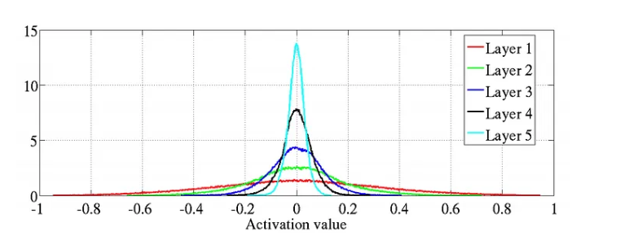

Layer code
Basically represent the equation: where is the weight matrix and is the bias.
class Layer:
def __init__(M,N):
self.weight = self.random.random((M,N))
self.bias = np.zeros(M)
def __forward(x):
return np.inner(W,x) + self.bias
The forward pass is done by the inner product of the weight and the input plus the bias. The problem is the weight initialization is from the standard normal.
This is a problem because:
- Vanishing Gradient Problem
- If the weights are too small the gradient goes to zero and there is no learning
- Exploding Gradient Problem
- If the weights are too large the gradient explodes and the outputs make no sense
Detailed understanding of the problem
If we initalize the weights from a standard normal distribution. We can see that the values across layers basically go to zero as we go deeper.

Mathematical proof of problem:
We write for the shared scalar variance of all weights at layer . Then for a network with layers,
As you see the problem, each layers variance is being multiplied. This is the reason, if we see the graph flattens out as the variance increases all the time.
To fix this, we set the variance of the gradients to be same across layers.
From a forward-propagation point of view, to keep information flowing we would like that
From a back-propagation point of view we would similarly like to have
Kaiming initialization
In popular terms, we use kaiming and xavier initialization. Kaiming paper takes into account the activation function, whereas Xavier initialization does not. The explanation is described here
Summary:
- Let us assume that, w is symetric across 0 and bias is zero.
- ReLU only cares about the positive part
- So, we care only half of the distribution cause it is symetric therefore we can calculate
- We also know that , we set the weights to be 0 mean so the right side is useless. We also know that as mean is zero. Final equation is
- Lets combine previous two points, we get
- For these to not scale up or down, we need
- Therefore, we need
Kaiming Normalization is setting the variance to be
Modified Code for layer
class Layer:
def __init__(self,M,N, bias = None):
self.weight = self.kaiming_init(M,N)
self.bias = bias if bias is not None else np.zeros(M)
def __forward(self,x):
output = np.inner(self.weight,x)
if self.bias is not None:
return output + self.bias
return temp
def __kaiming_init(self,M,N):
std_dev = np.sqrt(2.0 / M)
return np.random.normal(0, std_dev, size=(M, N))